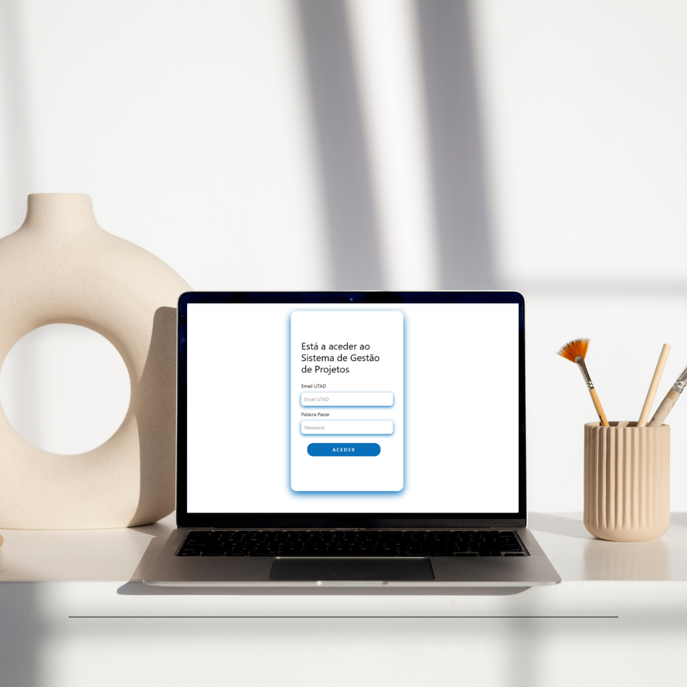

Projeto final de curso
Função: Gestão de projetos
Todos os anos são atribuídos projetos aos alunos
consoante o número de cadeiras feitas até ao momento, a sua média e as suas
preferências. Este processo envolve várias tarefas desde a recolha de temas de projetos
por parte dos docentes, à candidatura pelos alunos e, por fim à seriação e atribuição
dos projetos aos Alunos.
O objetivo deste projeto é facilitar este processo, através da implementação de um
protótipo web funcional de um sistema capaz de gerir todas as tarefas mencionadas
anteriormente, desde a inserção e validação dos projetos até à sua atribuição.
Para implementar o protótipo web, foi utilizado o Visual Studio/Visual Studio Code como
ambiente de desenvolvimento e as linguagens utilizadas foram o HTML, C# e CSS. Para
a criação da base de dados foi utilizado o sistema MSSQL
